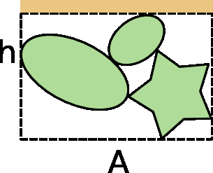

Introducción a la Física de los
Materiales Granulares
Descripción estructural de empaquetamientos granulares.
MANUEL CARLEVARO
Departamento de Ingeniería Mecánica
Grupo de Materiales Granulares — UTN FRLP
CONICET
Resumen
- Ángulo de reposo
- Compacidad, $\phi$
- Número de coordinación, $z$, y número de besuqueros
- Función de correlación de pares, $g(r)$
- Función de autocovarianza, $\xi(r)$
- Parámetro de orden de enlaces, $Q_l$ y $W_l$
- Tensor de trama, $F$
- Celdas de Voronoi
- Polígonos de la red de contactos
- Arcos
- Relaciones entre descriptores estructurales
- Ejemplos
Ángulo de reposo


Materiales secos: $17° \leq \alpha \leq 42°$, materiales cohesivos: $45° \leq \alpha \leq 90°$
Compacidad (packing fraction)
Compacidad, fracción de volumen ocupado,
packing fraction, volume(area) fraction: $\phi$, $c$, $\eta$
No confundir con la densidad numérica
$V$: volumen del contenedor.
Si todas las partículas son iguales:
$v_g$: volumen de una partícula.
Porosidad: $\epsilon = 1 - \phi$
Compacidad — límites

3D: $\displaystyle 0 < \phi < \frac{\pi}{3\sqrt{2}} \approx 0.74$ Kepler-Hales (fcc o hcp)
2D: $\displaystyle 0 < c < \frac{\pi\sqrt{3}}{6} \approx 0.91$ (hexagonal)
Empaquetamiento
- Empaquetamiento aleatorio compacto (RCP) $\approx 0.64$(3D) o $0.82$(2D)
- James G. Berryman, 1983, Phys. Rev. A
- S. Torquato, T. M. Truskett y P. G. Debenedetti, 2000, Phys. Rev. Lett. $\mapsto$ Maximally jammed packing
- Empaquetamiento aleatorio suelto (RLP) $\approx 0.55$(3D) o $0.77$(2D)
- George Y. Onoda y Eric G. Liniger, 1990, Phys. Rev. Lett.
- Leonardo E. Silbert, 2010, Soft Matter
- Empaquetamientos muy sueltos
- Dapeng Bi et al., 2011, Nature $\mapsto$ Shear jammed packing
- Massimo Pica Ciamarra y Antonio Coniglio, 2008, Phys. Rev. Lett. $\mapsto$ Zero entropy packing
Compacidad — límites
Polígonos (2D): C.M. Carlevaro y L.A. Pugnaloni, 2011, Journal of Statistical Mechanics: Theory and Experiment.
No teselado: $0.75 < c < 0.86$
Teselado: $0.77 < c < 1.0$
Polvos cohesivos (3D):
$0.15 < \phi < 0.48$
Compacidad — medición

Geometría básica
Fotografía
$\phi = \dfrac{N_{\text{black pixels}}}{N_{\text{pixels}}}$

Geometría probabilística
$\phi = \dfrac{N_{\text{hits}}}{N_{\text{shots}}}$
Calibrar con
capacidad eléctrica

Medir la altura: $\phi = \dfrac{Nv_g}{Ah}$
Número de coordinación — número de contacto (besuqueros)
Número de coordinación
Número de contacto

Si los granos son convexos: $\langle z \rangle = 2\,\dfrac{\text{número total de contactos}}{\text{Número de partículas}}$
Número de contacto — límites
Máximo (monodisperso)
Esferas: $z = 12$
Discos: $z = 6$
Deposición secuencial
(cualquier forma convexa / partículas rígidas)
2D: $\langle z \rangle = 2\frac{(2N)}{N} = 4$ (suma 2 contactos por grano)
3D: $\langle z \rangle = 2\frac{(3N)}{N} = 6$ (suma 3 contactos por grano)
Isostático (contactos puntuales) Ligaduras = Fuerzas
2D: $3N$ ligaduras escalares (2 traslación, 1 rotación) y $2N_c$ fuerzas escalares $\to N_c = \frac{3N}{2} \to \langle z \rangle = 2\frac{N_c}{N} = 3$
3D: $6N$ ligaduras escalares (3 traslación, 3 rotación) y $3N_c$ fuerzas escalares $\to N_c = 2N \to \langle z \rangle = 2\frac{N_c}{N} = 4$
Valores (confocal): $\phi = 0.4 \to \langle z \rangle = 4$; $\phi = 0.65 \to \langle z \rangle = 8$
Número de contacto — medición
- El número de contacto es difícil de medir porque es difícil distinguir contactos reales de "casi-contactos".
- En simulaciones se requiere guardar posiciones con altísima precisión para detectar contactos. Es mejor distinguir por las fuerzas.
- La regla de T. Pöschel para finalizar un contacto en simulación impide definir contactos sólo por las posiciones.
- Usar pintura, oxidación, trazadores fluorescentes, partículas fotoelásticas, puentes líquidos, conductividad, etc.

Behringer
Kudroli
Función de correlación de pares
$4\pi r^2 \rho g(r) dr =$ Probabilidad de encontrar el centro de una partícula en un cascarón de radio $r$ y espesor $dr$ centrado en otra partícula.
M Palombo et al., 2013, Scientific reports.
Función de correlación de pares — medición
$\displaystyle\int_0^\infty 4\pi r^2 \rho g(r)\,dr = N - 1$
$h(r) = g(r) - 1$ puede integrarse si no hay correlaciones de largo alcance
$S(k) = \mathcal{F}\{h(r)\} = \hat{h}(r)$ (factor de estructura, experimentos de scatering)
Posiciones detalladas:
barrer todos los pares de partículas y poner la distancia entre sus centros en un histograma con bin $dr$.
Normalizar con $4\pi r^2 \rho\,dr$ para obtener $g(r)$. Hay que conocer la densidad numérica $\rho$ de antemano.
maxbin; L; N
dr = float(L/maxbin)
hist = [0]*(maxbin+1)
rdf = {}#### READ COORDINATES IN ATOMS = [] ####
for i in range(npart):
xi = (atoms[i])[0]; ...
for j in range(i+1, npart):
xx = xi - (atoms[j])[0]; ...
ri = sqrt(xx*xx + yy*yy + zz*zz)
bin = int(ri/dr)
if bin <= maxbin:
hist[bin] += 1
phi = N/(L*L*L) # NORMALIZATION
norm = 2.0 * pi * dr * phi * N
for i in range(1, maxbin+1):
r = (i - 0.5) * dr
val = hist[i]/norm/(i*r)/(dr+dr)/12.0)
rdf.update({r:r:val})Autocovarianza
$S_2^{\text{I}}(\vec{r}_1, \vec{r}_2) = \langle A^{\text{I}}(\vec{r}_1) A^{\text{I}}(\vec{r}_2)\rangle$ con $A^{\text{I}}(\vec{r}) = \begin{cases} 1 & \text{si } \vec{r} \in \text{I} \\ 0 & \text{si } \vec{r} \notin \text{I} \end{cases}$
Si el medio es estadísticamente homogéneo e isotrópico: $S_2^{\text{I}}(\vec{r}_1, \vec{r}_2) = S_2^{\text{I}}(r)$
Entonces
$\chi^{\text{I}}(r) = S_2^{\text{I}}(r) - \phi^{(\text{I})2}$ Autocovarianza (integrable)
$\chi^{\text{I}}(r) = \chi^{\text{II}}(r)$ dado que $A^{\text{I}}(\vec{r}_1) = 1 - A^{\text{II}}(\vec{r}_1)$ y $\phi^{\text{I}} = 1 - \phi^{\text{II}}$, entonces $\chi^{\text{I}}(r)$ es único.
Puede medirse sobre imágenes experimentales o datos de simulación eligiendo puntos en forma aleatoria uniforme en el espacio. No es necesario tener información detallada de puntos de contactos o centros de granos.
Y. Jiao, F. H. Stillinger y S. Torquato, 2007, Phys. Rev. E.
Parámetro de orden orientacional
$\bar{Q}_{lm}$ es la media sobre todos los contactos de
$Q_{lm}(\vec{r}) = Y_{lm}(\theta(\vec{r}), \phi(\vec{r}))$ son los armónicos esféricos.
$Q_l$ (y otros parámetros como $W_l$) pueden calcularse para un grano o para todo el empaquetamiento.
| Geometría (3D) | $Q_6$ |
|---|---|
| fcc | 0.57452 |
| hcp | 0.48476 |
| icosaédrica | 0.66332 |
| líquido | 0 |
| Geometría (2D) | $Q_6$ |
|---|---|
| Amarillo | 0.740829 |
| Verde | 0.759623 |
Paul J. Steinhardt, David R. Nelson y Marco Ronchetti, 1983, Phys. Rev. B.
Tensor de trama
- $F$ es simétrico y real $\to$ Hermítico $\to$ puede diagonalizarse y los autovalores son reales: $F_1, F_2, F_3$.
- $Tr(F) = \sum_{\text{contacts}} |n^c|^2 = N_c$
- $F = F_I + F_D$ (isotrópico + deviator) con $F_I = \frac{1}{3}Tr(F)\delta_{ij}$ (3D)
$\begin{bmatrix} 2 & 0 \\ 0 & 2 \end{bmatrix}\quad \begin{bmatrix} 2 & 0 \\ 0 & 0 \end{bmatrix}\quad \begin{bmatrix} 0 & 0 \\ 0 & 2 \end{bmatrix}\quad \begin{bmatrix} 2 & 0 \\ 0 & 2 \end{bmatrix}\quad \begin{bmatrix} \frac{3}{2} & \frac{1}{2} \\ \frac{1}{2} & \frac{3}{2} \end{bmatrix}\quad \begin{bmatrix} 1 & \frac{1}{2} \\ \frac{1}{2} & 2 \end{bmatrix}$
Celdas de Voronoi
- Celda de Voronoi: Área o volumen más cercano a cada punto en el conjunto (polígonos blancos). La red recíproca se llama red de Delaunay (red negra).
- Para esferas y discos cada grano está contenido en su celda (no sucede en otros sistemas).
- Los vecinos pueden o no estar en contacto.
- La distribución de volúmenes de Voronoi parece seguir una ley universal (para empaquetamientos y para sistemas de bajísima densidad).
T. Aste et al. (varios artículos). - Voro++: http://math.lbl.gov/voro++/
Polígonos de la red de contactos + quadrons
- La red de contactos no incluye a vecinos cercanos que no están en contacto.
- Los polígonos indivisibles de la red pueden estar muy deformados.
- Los polígonos teselan el espacio pero no están asignados a ninguna partícula.
R. Arevalo et al., (varios artículos).
Quadrons:
- Los quadron teselan el espacio y se pueden asignar a una partícula.
R. Blumenfeld (R. Blumenfeld y S.F. Edwards, 2014, The European Physical Journal Special Topics y Takashi Matsushima y Raphael Blumenfeld, 2012, arXiv preprint arXiv:1207.2988).
Arcos
Arcos
- Contactos de sostén
- Contactos mutuamente estables (MSC)
- Agregados de granos usando MSC
- Dependiente de la historia de deposición de los granos
- $n_i$: número de arcos de $i$ partículas (incluye $i=1$)
- $n_i(x)$: ancho de los arcos de tamaño $i$
Arcos — ejemplos
- La mayoría de los arcos son tipo "cadena" aún en 3D
- Es necesario un criterio de terminación
L.A. Pugnaloni (varios artículos)
Relaciones
- $\phi \uparrow \to z \uparrow$
- Arcos$\uparrow \to z\downarrow$: $z_{\text{soporte}} = 2\left[1 + \frac{1}{N}\sum_{s=1}^{N} n_s\right]$ (2D)
- Arcos$\uparrow \to \phi\downarrow$ en general, pero no siempre
- $\langle z \rangle = Tr(F)/N$
- Las celdas de Voronoi se pueden usar para asignar un volumen local a cada grano y así calcular un $\phi$ local
Ejemplos — Vibrado de discos y esferas
L.A. Pugnaloni et al., PRE (2008)
Estados distinguibles por el estado de tensión.
I. Sanchez et al., PRE (2010); L.A. Pugnaloni et al., Pap. Phys. (2011).
Ejemplos — vibrado de polígonos
C.M. Carlevaro et al., JSTAT (2011)

Ejemplos — Cadenas de fuerzas y arcos
C.M. Carlevaro et al., EPJE (2012)
Las ligaduras hacen que la PDF decaiga más rápido que una exponencial.
B.P. Tighe et al., PRL (2008).
El efecto del orden en la descarga de silos1
1Carlevaro, Kozlowski y Pugnaloni, «Flow rate in 2D silo discharge of binary granular mixtures: the role of ordering in monosized systems» (2024)
Lecturas recomendadas I
- James G. Berryman. «Random close packing of hard spheres and disks». Phys. Rev. A 27 (2 feb. de 1983), págs. 1053-1061.
- Dapeng Bi, Jie Zhang, Bulbul Chakraborty y Robert P. Behringer. «Jamming by shear». Nature 480.7377 (2011), pág. 355.
- R. Blumenfeld y S.F. Edwards. «Granular statistical mechanics — a personal perspective». The European Physical Journal Special Topics 223.11 (oct. de 2014), págs. 2189-2204.
- C. Manuel Carlevaro, Ryan Kozlowski y Luis A. Pugnaloni. «Flow rate in 2D silo discharge of binary granular mixtures: the role of ordering in monosized systems». Frontiers in Soft Matter 4 (2024).
- C.M. Carlevaro y L.A. Pugnaloni. «Steady state of tapped granular polygons». Journal of Statistical Mechanics: Theory and Experiment 2011 (2011).
- Massimo Pica Ciamarra y Antonio Coniglio. «Random Very Loose Packings». Phys. Rev. Lett. 101 (12 sep. de 2008), pág. 128001.
Lecturas recomendadas II
- Y. Jiao, F. H. Stillinger y S. Torquato. «Modeling heterogeneous materials via two-point correlation functions: Basic principles». Phys. Rev. E 76 (3 sep. de 2007), pág. 031110.
- Takashi Matsushima y Raphael Blumenfeld. «Fundamental structural characteristics of planar granular assemblies: self-organisation and scaling away friction and initial state». arXiv preprint arXiv:1207.2988 (2012).
- George Y. Onoda y Eric G. Liniger. «Random loose packings of uniform spheres and the dilatancy onset». Phys. Rev. Lett. 64 (22 mayo de 1990), págs. 2727-2730.
- M. Palombo, A. Gabrielli, VDP Servedio, G. Ruocco y S. Capuani. «Structural disorder and anomalous diffusion in random packing of spheres». Scientific reports 3 (2013), pág. 2631.
- Leonardo E. Silbert. «Jamming of frictional spheres and random loose packing». Soft Matter 6 (13 2010), págs. 2918-2924.
- Paul J. Steinhardt, David R. Nelson y Marco Ronchetti. «Bond-orientational order in liquids and glasses». Phys. Rev. B 28 (2 jul. de 1983), págs. 784-805.
Lecturas recomendadas III
- S. Torquato, T. M. Truskett y P. G. Debenedetti. «Is Random Close Packing of Spheres Well Defined?» Phys. Rev. Lett. 84 (10 mar. de 2000), págs. 2064-2067.